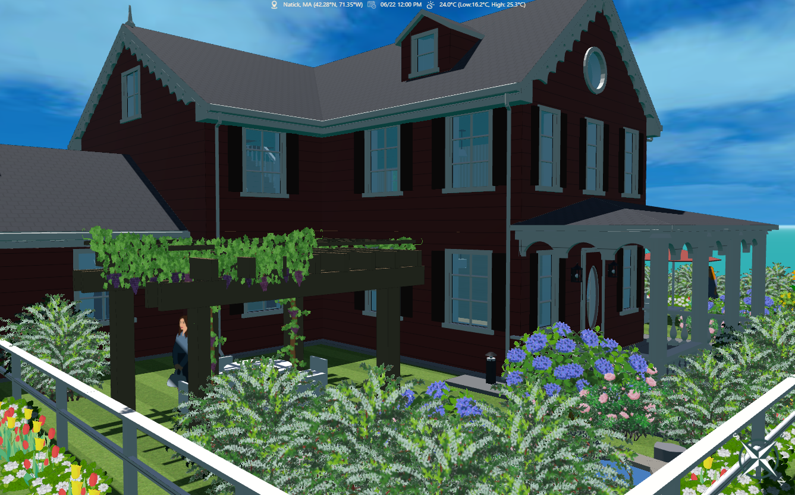

Design a Net-Zero House with AI
An NGSS-aligned instructional unit that uses Aladdin and generative AI to guide students through the design of a highly energy-efficient, net-zero house.
Artificial Intelligence is reshaping our world. While you may already know generative AI (GenAI) through tools like ChatGPT, Claude, and Gemini, its potential goes far beyond writing essays or creating art. In this activity, you will explore how GenAI can be harnessed for engineering design, a core competency of the Next Generation Science Standards (NGSS). By participating, you are helping researchers evaluate the impact of AI on how we teach and learn essential science and engineering practices.
Students' mission is to use Aladdin, a GenAI-enabled computer-aided design (CAD) tool, to create a highly energy-efficient, eco-friendly house (net-zero house). This activity is supported by an instructional unit consisting of three parts:
- Tutorial: Master the Aladdin CAD interface and learn how to interact with the AI assistant.
- Worksheet: Apply engineering principles to test different variables and optimize your design.
- Report: Document your findings, justify your design choices, and reflect on the AI's role in your process.

Student Materials
Students should make a copy of the workbook (Google doc linked below) and follow the instructions in the workwork.
Student Workbook
Pre-Test Assessment
Post-Test Assessment
Teacher Guides
The following links provide some sample projects for different locations in the world to demonstrate the feasibility.
Sample project 1: Durham, North Carolina
Sample project 2: Honolulu, Hawaii
Sample project 3: Kyiv, Ukraine
Sample project 4: Kaunas, Lithuania
Sample project 5: Austin, Texas
Related Educational Standards
The Next Generation Science Standards (NGSS): MS-ETS-1, HS-ETS-1
Acknowledgements
The development of this curriculum unit is supported by the National Science Foundation (NSF) under grant numbers #2131097 and #2301164. Any opinions, findings, and conclusions or recommendations expressed in this material, however, are those of the authors and do not necessarily reflect the views of NSF.